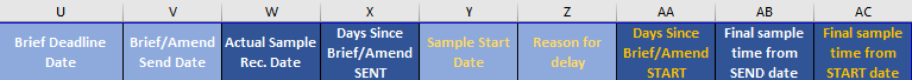

WIP Tab
Summary: This file tracks the lifecycle of design development programs, and their styles. Through status codes noted by the user at each stage, the data tabs pull useful statistics that show a summary of the category, and of the department as a whole. Statistics gathered show if there are trends that need to be examined, and more generally if the season is on track to reach adoption rate goals set by previous seasons.
Program Lines vs. Style Lines
- Program Line: summary of program status; shows most current relevant dates of recent changes within styles.
- Line color fill always remains white (no fill)
- Style Lines: each line represents one physical sample. Add lines when new samples are requested.
- Yellow Fill: New lines, or samples still in progress
- Orange Fill: Samples no longer in development (either dropped fully, or being revised and a new sample is coming)
- Green Fill: Approved Sample
Columns A through G:
- Sample Stage/Season:
- Program Lines: Season (ex: Fall 17)
- Style Lines: Sample stage of development (ex: Initial, 1st, 2nd, 3rd, 4th)
- Status
- Program Lines: Shows latest date majority of styles estimated send date from vendor; if unknown says 'TBD'. Once sent from vendor updated to 'Sent'. Once sample is received, change status to 'Here', until the conclusion of the season when changed to outcome (Approved, or Dropped). When status is changed to 'Here', Actual Sample Received Date appears in Column W.
- Style Lines: Shows date given by vendor for estimated sample send date; if unknown is 'TBD'; Once sent from vendor updated to 'Sent'. Once received, change status to 'Here', and do not change again. When status is changed to 'Here', Actual Sample Received Date appears in Column W.
- Comments
- Program Lines: Overall comments relating to ongoing status of the entire program. Changed to date approved (if approved), or reason for drop (if dropped) at the conclusion of the development season.
- Style Lines: comments relevant to each individual sample.
- Lead Time
- Program Lines: Number (in days) that it takes to produce the product once approved (needed to prioritize approval times).
- Style Lines: Unnecessary to fill in, will be the same as the Program level
- Class
- Program Lines: Number corresponding to the development category (1101 = Category 1)
- Style Lines: Number corresponding to the development category (1102 = Category 2)
- P/F (Proto/Finalization)
- Program Lines: Meeting in which the Program was affected, and the code (Column G) was changed.
- Style Lines: Meeting in which the style was affected, and the code (Column G) was changed
- Code
- Program Lines: Status of the overall program (Program to-be-determined, Program Amended, Program OK, etc.)
- Style Lines: Status of the individual style (TBD, OK, Dropped, Approved, etc.)
Program and Style Codes (Column G)
| Program Line Codes |
| PTBD |
Program To-Be-Determined |
| PNEW |
Program New |
| POK |
Program OK |
| PAM |
Program Amended |
| PA |
Program Approved |
| PD |
Program Dropped |
| PM |
Program Moved |
| PND |
Program Not Developed |
| Style Line Codes |
| TBD |
To Be Determined |
| NEW |
New Style |
| NAMS |
New Amended Sample |
| NCA |
New Color Add |
| NSA |
New Shape Add |
| OK |
OK, Reviewed with no change |
| AMRC |
Amended for Recolor |
| AMQ |
Amended for Quality |
| AMD |
Amended for Design |
| AMSC |
Amedned for Strategy Change |
| AM$ |
Amended for Cost |
| A |
Approved |
| DD |
Dropped for Design |
| DQ |
Dropped for Quality |
| DC |
Dropped for Cost |
| DT |
Dropped for Timing |
| DO |
Dropped for Other |
| BO |
Buyer Overdevelopment Drop |
| ED |
Executive Drop |
| SC |
Strategy Change Drop |
| VO |
Vendor Over-Sampled |
| M |
Moved |
| SND |
Style Not Developed |
Columns H through T
Specific details to each program, usually the same Program and Style lines per program
- Program Name
- Style Number
- Size
- Item Description
- Color Combo
- Material
- Agent
- Factory
- Theme
- Room
- Good/Better/Best Pricepoint
- Priority
- Designer
Columns U through AC

- Brief Deadline Date: deadline for design team to send direction to the Vendor
- Brief Amend/Send Date: Actual send date of the original brief, or amendment direction.
- Actual Sample Received Date: date the physical sample is received in the office.
- Days Since Brief or Amendment Send Date (formula): number of days since the Brief or Amendment has been sent. This number counts up as days go by, but changes to a dash once the actual samples is received. Then the final sample time appears in Column AB. This number will not count up if the sample code (Column G) is SND (Sample Not Developed), or PND (Program Not Developed).
- Sample Start Date: Date the factory actually begins making the sample.
- Reason for Delay: Reason given if there is a delayed start date beyond 3 days of sending.
- Days Since Brief or Amendment Start Date (formula): number of days since the Brief or Amendment has been started. This number counts up as days go by, but changes to a dash once the actual samples is received. Then the final sample time from Start date appears in Column AC. This number will not count up if the sample code (Column G) is SND (Sample Not Developed), or PND (Program Not Developed).
- Final Sample Time from Send Date (formula): final number of days between brief/amend send, and sample received in the office; number appears only after the actual sample is received.
- Final Sample Time From Start Date (formula): final number of days between brief/amend sample started, and sample received in the office; number appears only after the actual sample is received.